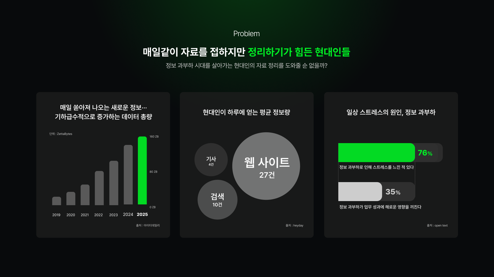
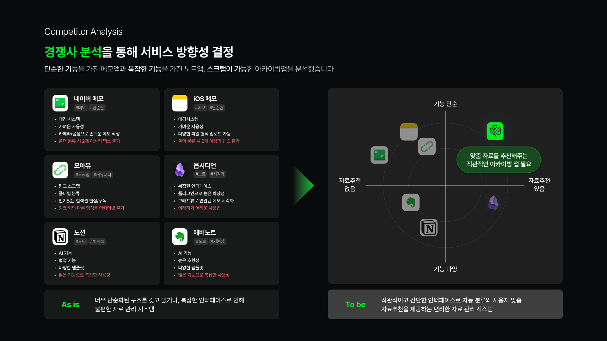
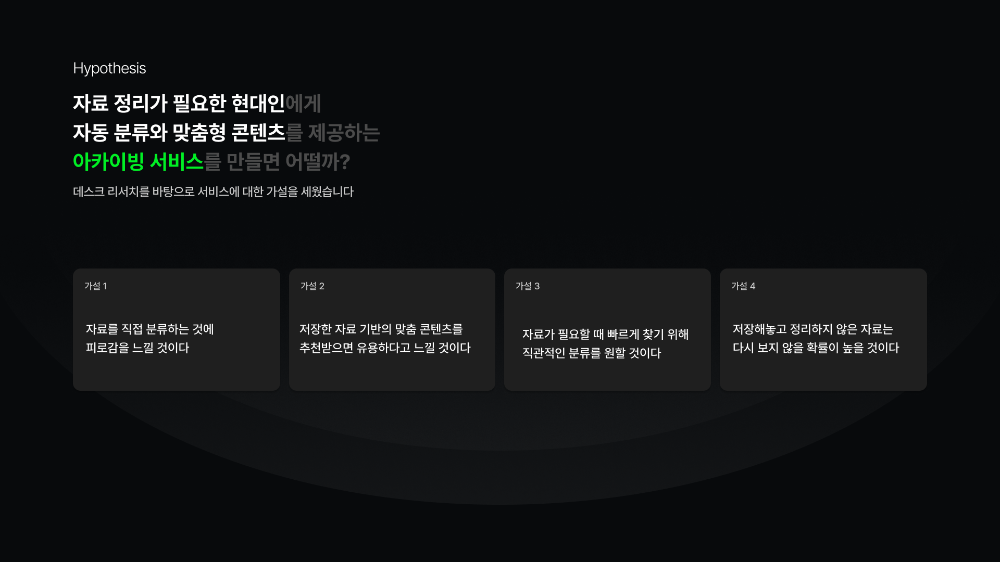
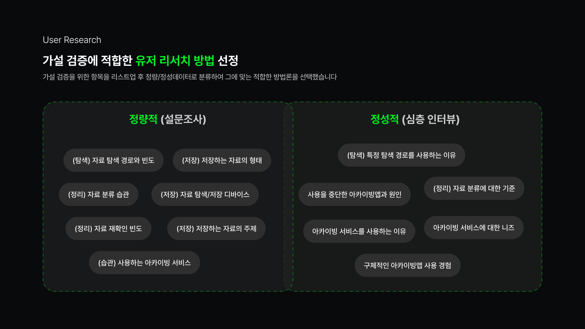
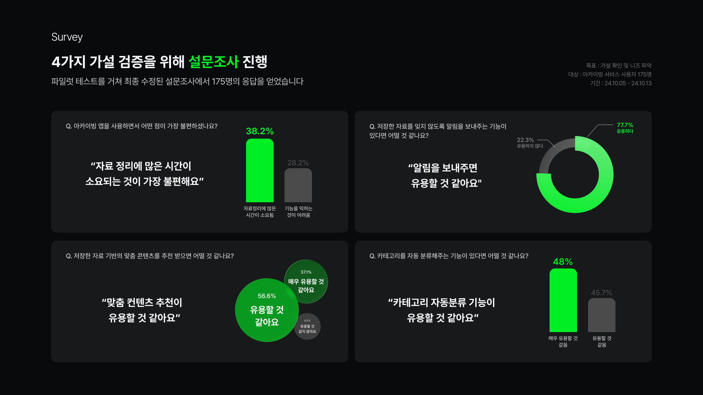
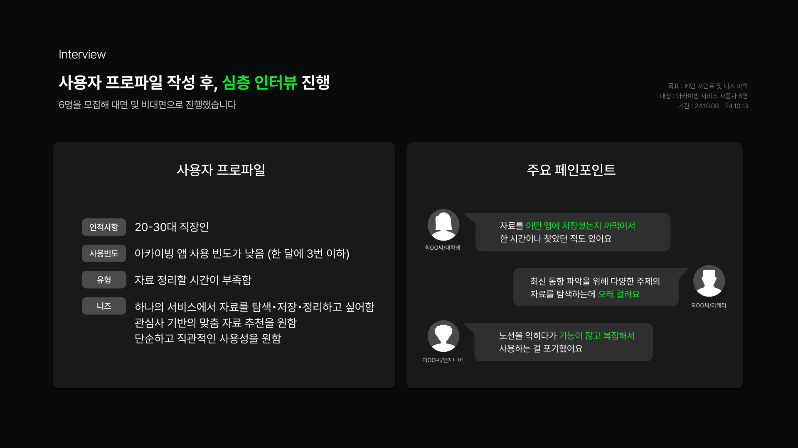
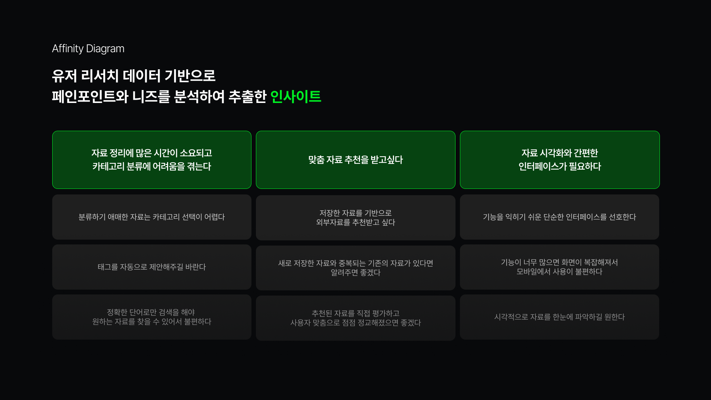

Brainmate
브레인메이트는 AI 기반 분류 및 추천을 통해 사용자가 효율적으로 자료를 탐색하고 정리할 수 있도록 돕는 지능형 아카이빙 서비스입니다.
역할
UX 디자이너
기간
개인 작업 : 2024.12 - 2025.02
팀 작업 : 2024.09 - 2024.10
Tools
Figma
Chat GPT
Perplexity
Problem
사용자들은 디지털 환경에서 정보 과부하에 어려움을 겪고 있습니다. 콘텐츠를 탐색하면서 피로가 쌓이고, 자료를 정리하고 분류하는 데 어려움을 겪고 있습니다.

Research & UX Modeling
사용자들은 디지털 환경에서 정보 과부하에 어려움을 겪고 있습니다. 콘텐츠를 탐색하면서 피로가 쌓이고, 자료를 정리하고 분류하는 데 어려움을 겪고 있습니다.
Competitive Analysis


Hypothesis

Research Method

Survey



In-Depth Interview



Strategy
BrainMate는 AI 기반 자동 분류, 지능형 태깅, 맥락적 검색을 도입하여 원활한 아카이빙 경험을 제공합니다. 인터페이스는 사용자 행동에 적응하며, 선호도를 학습하여 시간이 지남에 따라 정리 방식을 개선합니다.



Solution


Learning
이번 프로젝트를 통해 UX 리서치와 모델링, AI 도구 활용에 대한 깊은 이해를 얻었습니다. 특히 AI 기반 분류 및 추천 시스템 설계 경험을 통해 사용자 중심 디자인의 중요성을 다시 한번 깨달았습니다. 앞으로도 이러한 경험을 바탕으로 혁신적인 디지털 솔루션을 개발하는 데 기여하고 싶습니다.